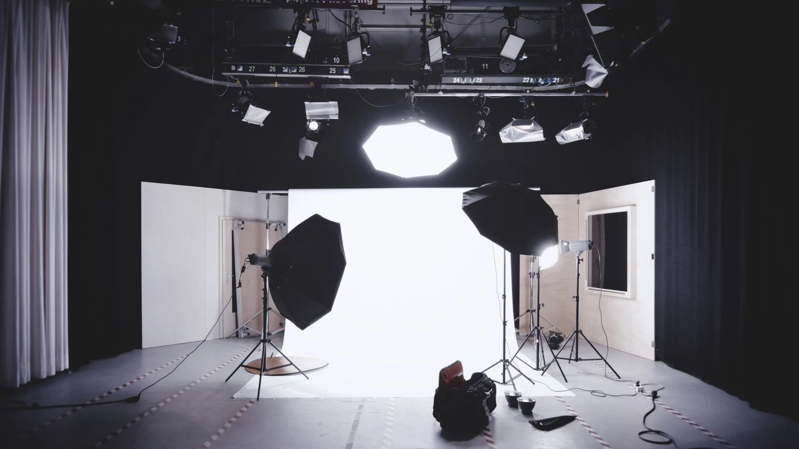

Capture Moments es un estudio de fotografía con sede en Quito, Ecuador. Nuestra pasión es capturar momentos preciosos y memorables para eventos y sesiones individuales. Con nuestra dedicación a la magia de la fotografía, creamos recuerdos que duran toda la vida.

El sueño de Capture Moments comenzó con dos apasionados de la fotografía: María González y Alejandro López. Ambos compartían una profunda pasión por contar historias a través de las imágenes y capturar la esencia única de cada momento.
María González, desde muy joven, descubrió su amor por la fotografía mientras capturaba los momentos familiares en reuniones y celebraciones. Cada imagen que tomaba contenía una historia que ella quería preservar para siempre. Con el tiempo, su talento y dedicación la llevaron a especializarse en fotografía de eventos y retratos, convirtiéndose en una talentosa fotógrafa.
Alejandro López se formó en bellas artes, desarrollando una profunda comprensión de la estética y la creatividad visual. Su enfoque artístico lo llevó a explorar la fotografía desde una perspectiva más creativa y única, buscando siempre la belleza en cada encuadre.
Fue en una exposición de arte en Quito donde María y Alejandro se conocieron y descubrieron que compartían la misma visión de la fotografía. Juntos, decidieron unir sus talentos y fundaron Capture Moments, con el objetivo de crear un estudio de fotografía que no solo capturara momentos, sino que también contara historias, evocara emociones y dejara recuerdos imborrables.
Asistente de fotografía y editora de imágenes.
Con más de 5 años de experiencia en el campo de la fotografía y la edición de imágenes.
Encargado de la logística y coordinación de eventos.
Cuenta con una amplia experiencia en la planificación y ejecución de eventos de diversos tamaños y características.
Encargada de marketing y redes sociales.
Con amplia experiencia en estrategias de marketing digital y gestión de redes sociales para aumentar la visibilidad y el alcance de nuestra empresa.
Ser el estudio de fotografía más reconocido y confiable en Quito, capturando momentos especiales con creatividad, pasión y dedicación para crear recuerdos duraderos.
Ofrecer servicios de fotografía excepcionales que superen las expectativas de nuestros clientes y les permitan revivir emociones especiales a través de nuestras imágenes.